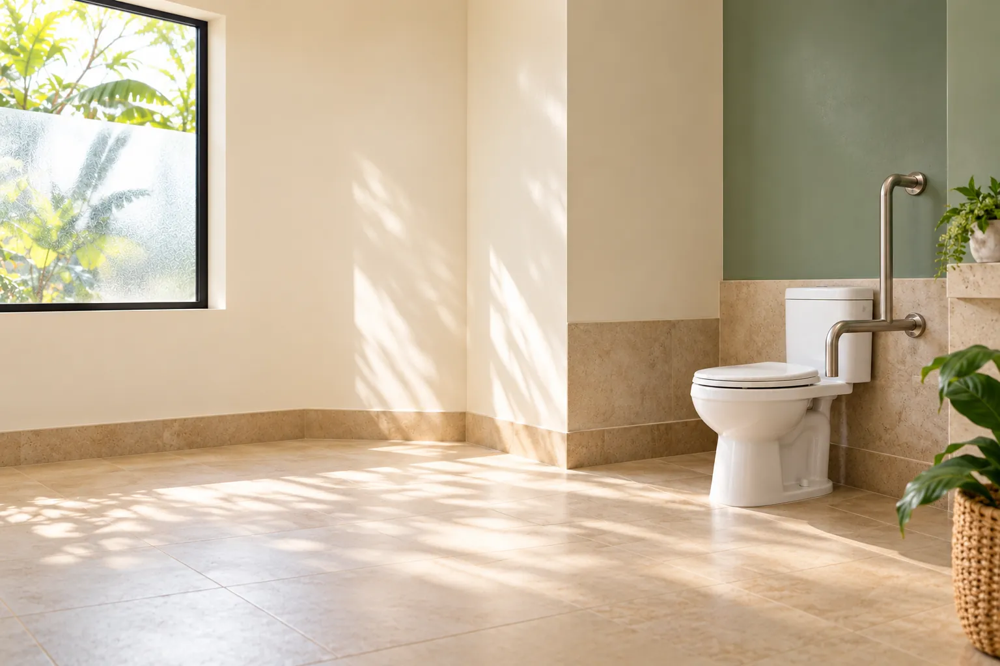
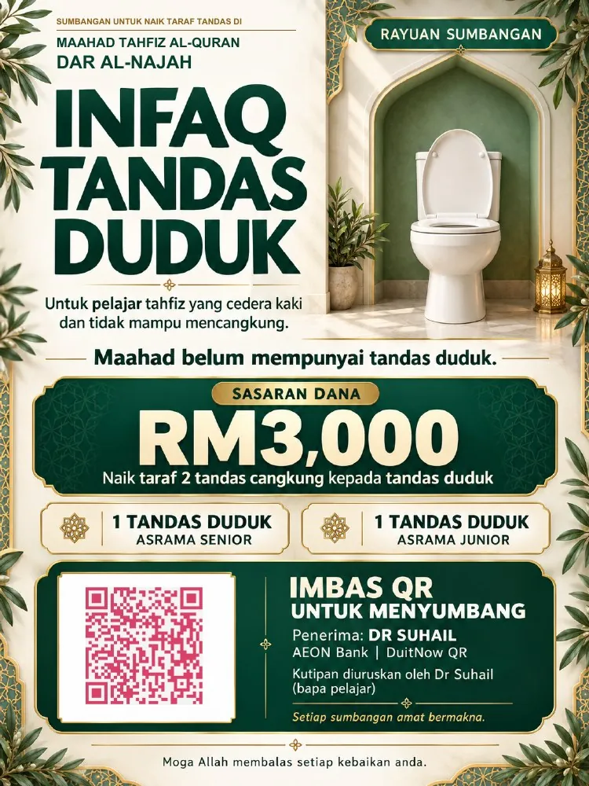

Asrama senior
Naik taraf satu tandas untuk menambah pilihan kemudahan bagi mereka yang sukar mencangkung.
Satu usaha bersama
Bantu sediakan dua tandas duduk di Maahad Tahfiz Al-Quran Dar Al-Najah, untuk keselesaan pelajar yang cedera dan pelawat yang uzur.
Sasaran RM3,000 · Diuruskan oleh Dr Suhail
Gambar ilustrasi · Bukan gambar sebenar maahad

Jumlah disahkan
RM0
daripada sasaran RM3,000
— penderma setakat ini
Menghubungi rekod…
—
Jumlah disemak oleh Dr Suhail daripada akaun bank. Laman ini tidak bersambung terus kepada bank — angka berubah selepas semakan dibuat.
Tujuan sumbangan
Dana digunakan untuk menaik taraf dua tandas cangkung sedia ada kepada tandas duduk — satu di asrama senior dan satu lagi di asrama junior.
Naik taraf satu tandas untuk menambah pilihan kemudahan bagi mereka yang sukar mencangkung.
Naik taraf satu tandas untuk membantu pelajar yang memerlukan kemudahan tandas duduk.

Amanah & tujuan
Kutipan ini diuruskan oleh Dr Suhail, ibu bapa pelajar, dengan persetujuan mudir Maahad Tahfiz Al-Quran Dar Al-Najah. Sumbangan diterima melalui akaun peribadi beliau yang digunakan untuk mengurus kutipan ini.
Setiap pindahan dan imbasan QR direkodkan — tarikh, jumlah dan rujukan. Rekod ini disimpan untuk tujuan ketelusan, dan boleh ditunjukkan kepada mudir maahad bila-bila masa diperlukan.
Mulakan dengan seikhlas hati
Pilih jumlah yang selesa. Anda boleh menyumbang melalui pindahan bank atau QR DuitNow ke akaun yang sama.
Jumlah dipaparkan selepas semakan oleh penganjur. Derma baharu mungkin belum terus kelihatan pada laman.
Semak nama penerima dan nombor akaun sebelum mengesahkan pindahan. Ini ialah akaun peribadi Dr Suhail yang digunakan untuk kutipan infaq.
Semoga setiap sumbangan menjadi kebaikan yang berpanjangan.
Maklumat kutipan
Penerangan ringkas untuk membantu anda memahami tujuan dan cara kutipan ini diuruskan.
Dr Suhail menyemak akaun bank dan mengemas kini jumlah yang telah disahkan secara berkala. Masa terakhir disahkan dipaparkan pada laman. Laman belum disambungkan terus kepada AEON Bank.
Bayaran diterima ke akaun peribadi AEON Bank milik Muhammad Suhail bin Satri. Dana diuruskan oleh Dr Suhail dengan persetujuan mudir. Akaun pindahan dan QR adalah akaun yang sama.
Laman memaparkan kutipan selesai dan menyembunyikan butiran bayaran apabila jumlah yang disahkan mencapai sasaran. Nombor akaun dan QR yang telah disimpan masih boleh menerima pindahan; penutupan laman tidak menyekat transaksi bank.
Tidak. Buat pindahan bank atau bayaran QR dan tulis “Infaq Tandas” pada ruangan rujukan. Laman ini tidak meminta nama atau resit penderma.
Ini infaq atas usaha sendiri, bukan sumbangan kepada badan bertauliah. Tiada resit rasmi atau pelepasan cukai ditawarkan.
Ada pertanyaan tentang kutipan ini? Hubungi 018-963 7320